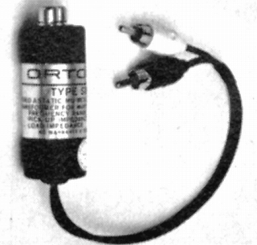
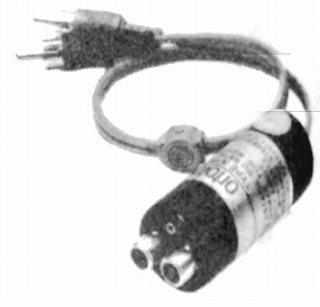

STA72Q

■価格 13,000円■ MC型カートリッジ用昇圧トランス■1次インピーダンス 2Ω■2次インピーダンス 10k〜50kΩ ■周波数帯域 ■昇圧比 100倍 ■重量 ■寸法■発売 1974〜75年■販売終了 1987年頃■備考 価格は1975年頃のものSL-15シリーズ用。SPUにも使用可能。
1985年頃の資料では「STM-72」と表記されるが、同一のものと思われる。

ORTOFONのインデックスヘ